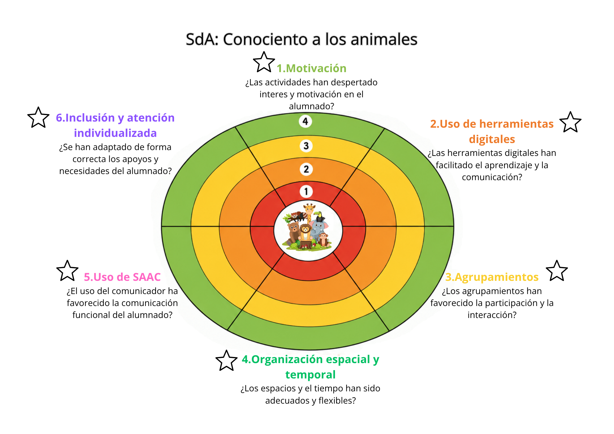
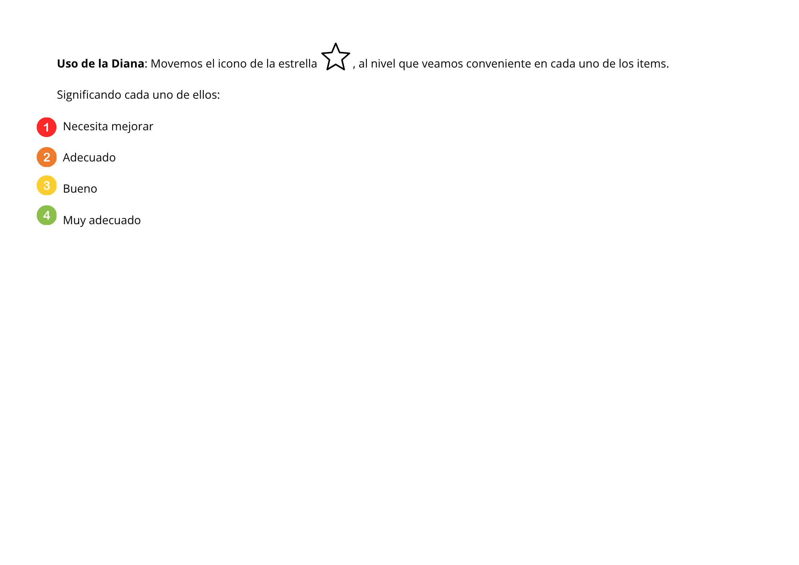

Recopilamos
Con este instrumento evaluaremos el grado de motivación e interés mostrado por el alumnado durante la SdA, la adecuación de las herramientas digitales utilizadas, la funcionalidad del comunicador (SAAC), la organización espacial y temporal de las actividades, la eficacia de los agrupamientos y la adecuación de los apoyos individualizados; además, este instrumento nos servirá para reflexionar sobre la práctica docente y detectar futuras mejoras.
Lo usaremos al finalizar la Situación de Aprendizaje, con la finalidad de realizar una valoración global del funcionamiento de la propuesta didáctica y analizar si las actividades, recursos y metodologías empleadas han sido adecuadas para el alumnado.
Las variables que pueden influir son entre otras los diferentes niveles de atención, la motivación del alumnado hacia la temática, las dificultades de regulación emocional, las diferencias en el uso del SAAC, la fatiga y la necesidad de adaptación de tiempos y espacios para algunos alumnos/as de una forma y otros/as de otra.
Para evitar estas variables, debemos tener en cuenta los diferentes ritmos de aprendizaje, la flexibilización de los apoyos, la adaptación de las actividades a las características del alumnado en general y los intereses del alumnado al elegir la temática de la SdA.
Los datos se recogerán mediante la cumplimentación de la diana; teniendo en cuenta los registros de observación realizados durante las sesiones, anotaciones del docente, evidencias fotográficas de actividades y la revisión de la participación y respuesta del alumnado ante las tareas propuestas.
A modo de ejemplo se adjunta el enlace de la diana realizada en Canva:
https://canva.link/ypziyp7mw3s1uvk

